Dynamically learning to learn Emerging Fake News Detection
Yuhui Zuo
Emergent Fake News Detection On social media
we specify the definition of fake news as news which is intentionally fabricated and can be verified as false.
COVID-19/Presidential election/Stock market
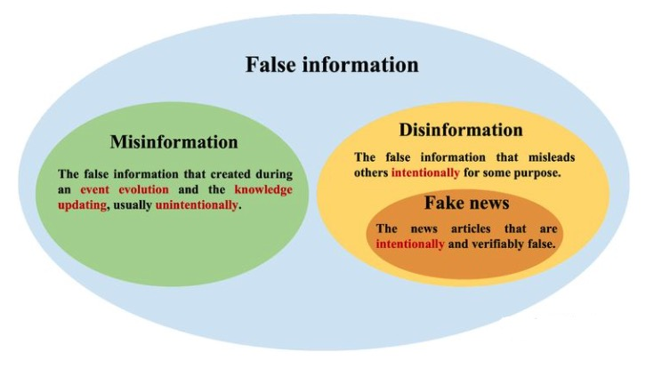Current Problem
For the emerging early fake news, the effect is poor （few-shot learning）
Challenge 1 : Early detection of fake news
The model can not continue to adapt to the emerging false news
Challenge 2 : Domain shift
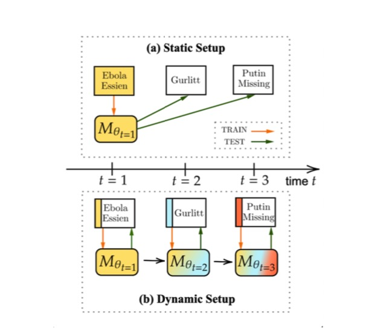non-stationary input data stream
\[\begin{aligned} T = (X_1,Y_1),(X_2,Y_2),...,(X_t,Y_t) \end{aligned} \]
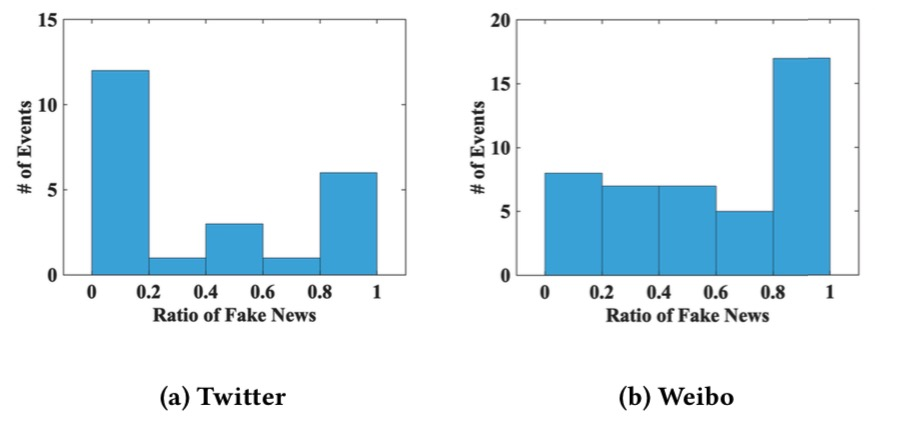Meta learning
Learn to learn
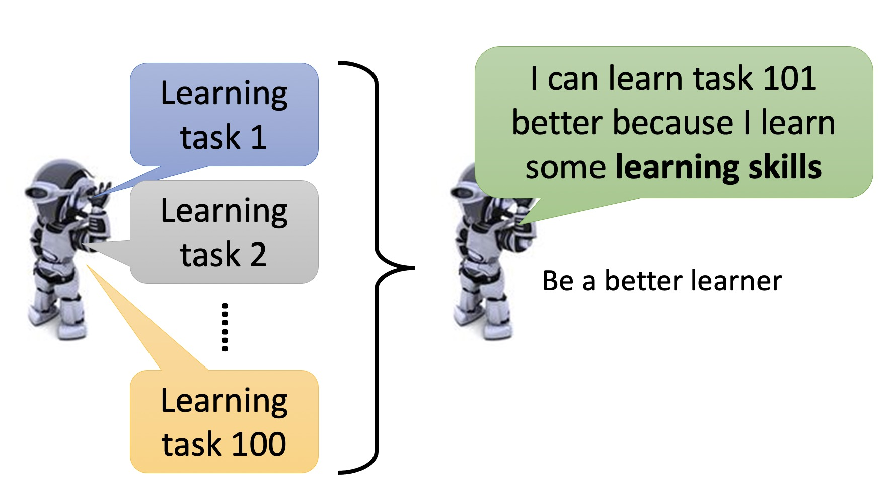
Define a set of learning algorithm
Machine-learning : The ability to find a function f based on the data
Meta-learning : According to the data, the ability to find a function f, the ability of a function F
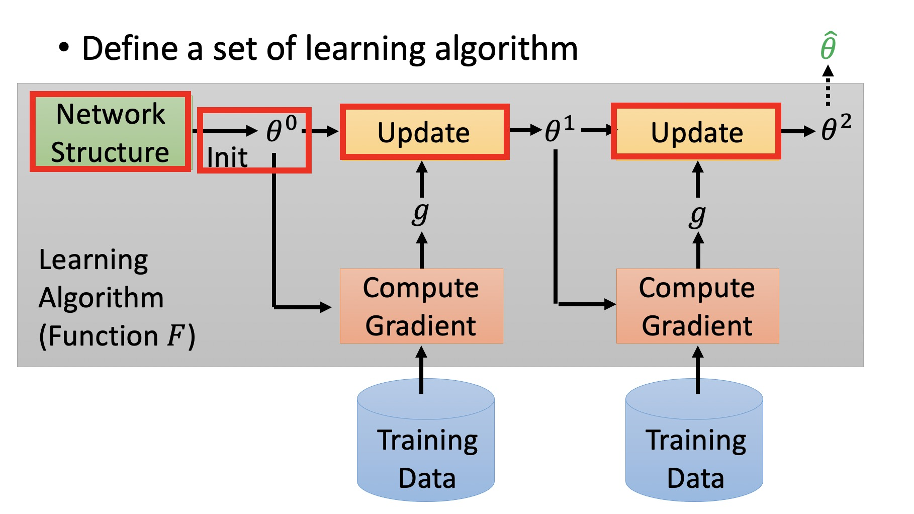MAML
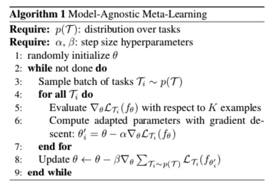
MAML
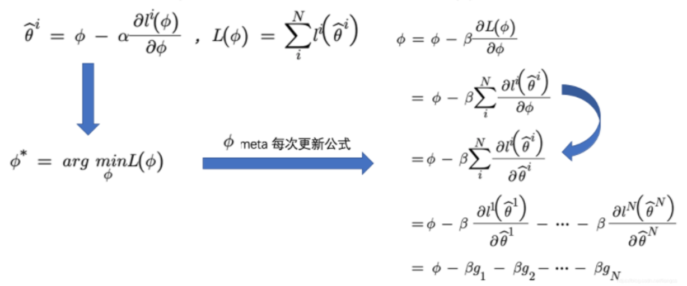
MAML
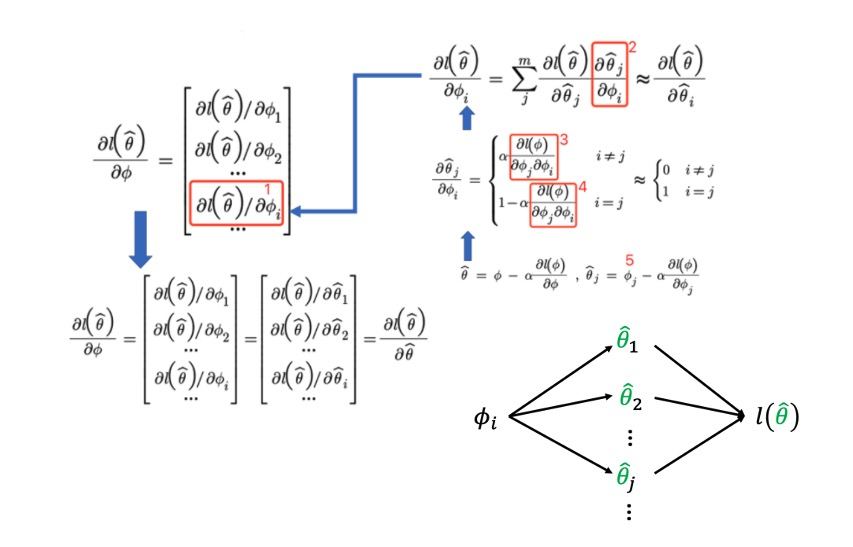
Reptile
\[\begin{aligned} \phi = \phi +\beta \frac{1}{N} \sum_{i=1}^N(\hat \theta_i-\phi) \end{aligned} \]
\[\begin{aligned} \hat \phi_i =W &= \frac{1}{N} \sum_i^N \hat w = \frac{1}{N} \sum_i^N(\phi - \alpha\sum_j^k g_{ij}） = \phi + \beta (- \frac{\alpha}{N} \sum_i^N\sum_j^k g_ij) \end{aligned} \]
\[\begin{aligned} W = \frac{1}{2} [(\phi - \alpha g_11 - \alpha g_12 - \alpha g_13 )+(\phi - \alpha g_21 - \alpha g_22 - \alpha g_23 )] \end{aligned} \]
\[\begin{aligned} \phi &= \phi + \beta(W- \phi)\\ &=\phi - \frac{\beta\alpha}{2}[(g_11+g_12+g_13) + (g_21+g_22+g_23)]\\ &=\phi - \beta\alpha(g_11+g_12+g_13) - (g_21+g_22+g_23)\\ \end{aligned} \]
Lifelong learning or Continual learning
Continual learning

Catastrophic forgetting
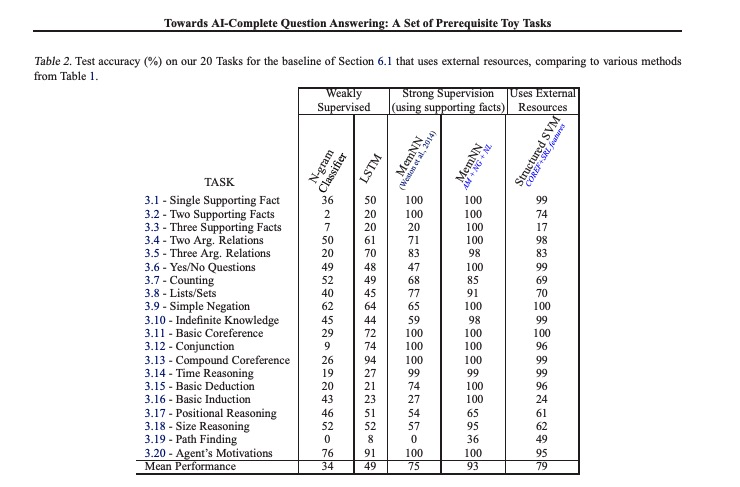
Catastrophic forgetting
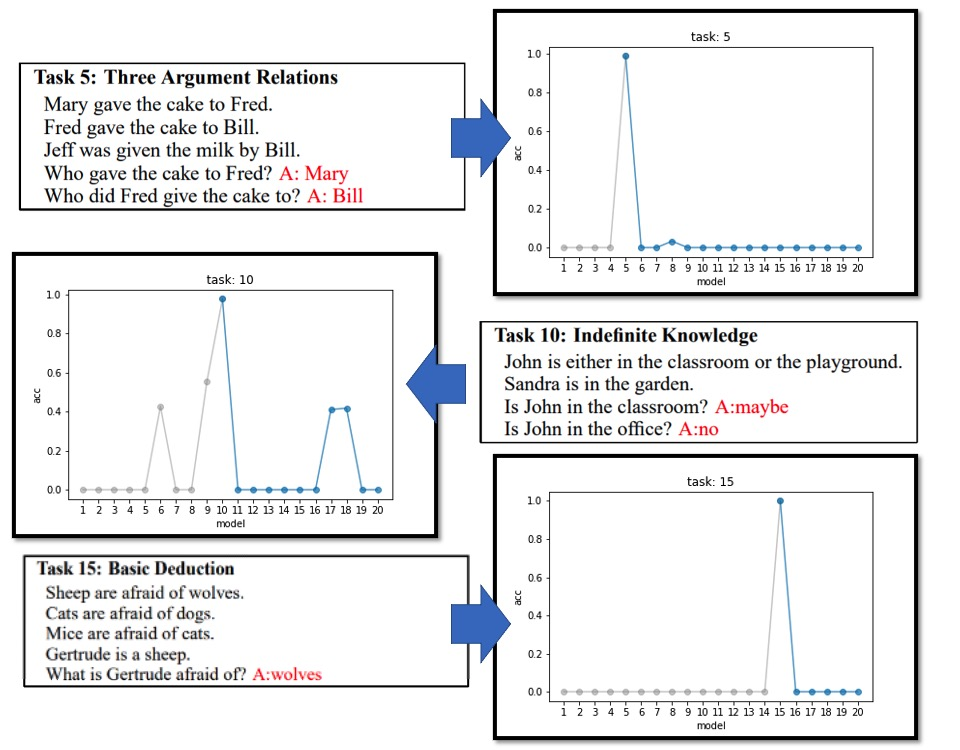
Catastrophic forgetting
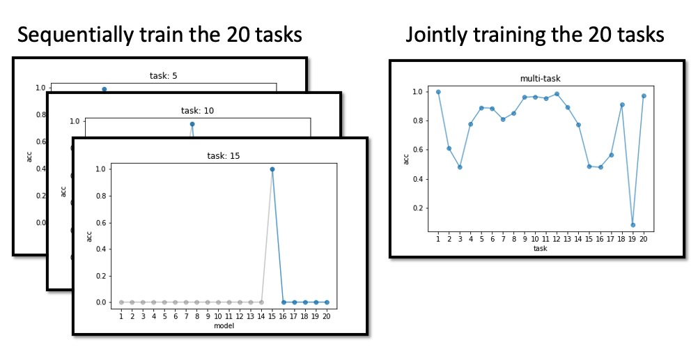
Method
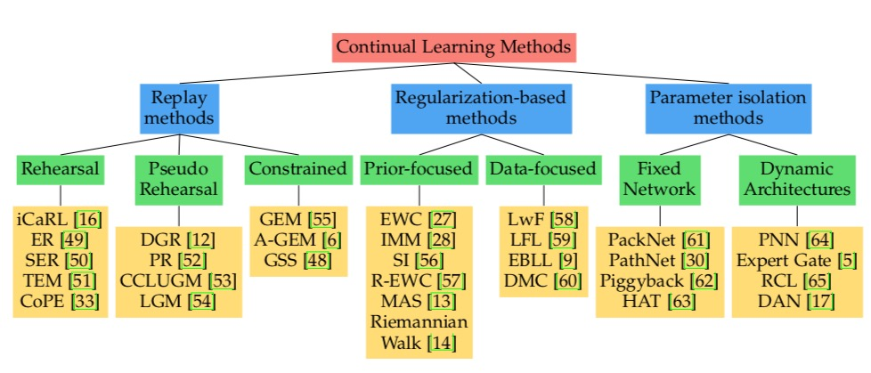
Meta-Experience Replay
Method
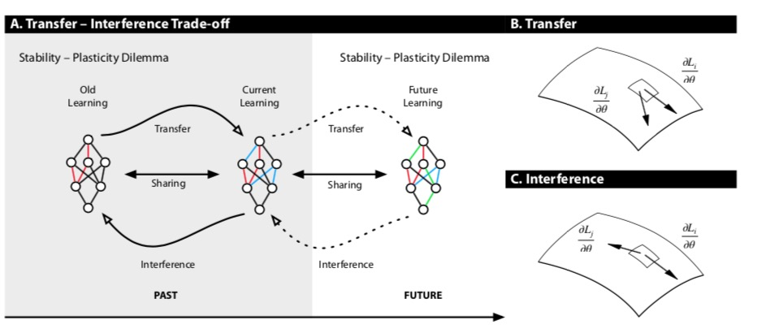
Evaluation
Evaluation metric
Retained Accuracy(RA) 是模型在训练结束时跨任务的平均准确率。
\[\begin{aligned} \frac{1}{T} \sum_{i=1}^T R_{T,i} \end{aligned} \]
Backward transfer (BWT) 学习任务 t 对前一任务 k ≺ t 的性能的影响。当学习任务 t 时，提高了先前任务 k 的性能(存在正面的反向迁移)。 当学习任务 t 会降低先前任务 k 的性能时(存在负面的反向迁移)。 越大意味着灾难性遗忘越严重。
\[\begin{aligned} \frac{1}{T-1} \sum_{i=1}^{T-1} R_{T,i} - R_{i,i} \end{aligned} \]
Evaluation metric
Forwardtransfer(FWT) 学习任务t 对未来任务 k>t 的性能的影响。
\[\begin{aligned} \frac{1}{T-1} \sum_{i=2}^{T-1} R_{i-1,i} - \hat b_i \end{aligned} \]